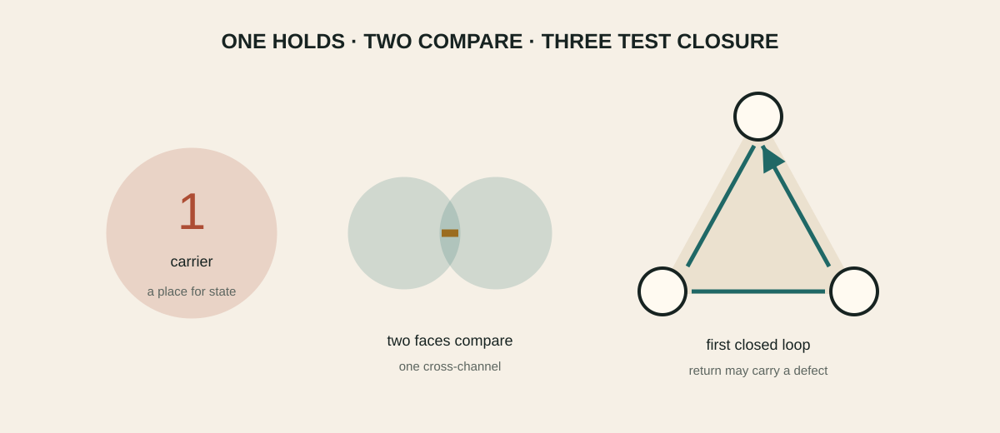

Why three is meaningful
One carrier, two faces, three relations
Status: Follows from declared assumptions and has an inspectable certificate. Function: maps territory, distinctions, dependencies and interfaces.

The smallest relational closure
Two faces define a comparison, but a third relation is the first place where local pairwise consistency can fail around a loop. This is why the gear intuition becomes mathematically meaningful at three: not because the universe is literally geared, but because an odd cycle detects a return defect invisible on a single edge.
Expanded claim pageScope · logical anatomy · verification route · boundary · sourcesOpen claim →The same grammar appears in two-port response matrices, Peirce off-diagonal spaces, placement triangles and three-edge Wilson data. What is shared is a typed relational pattern, not an identity of physical mechanisms.
Expanded claim pageScope · logical anatomy · verification route · boundary · sourcesOpen claim →Jordan recursion
For block-positive response matrices, eliminating an interior degree of freedom produces a Schur complement. Written in Jordan language, the correction is a triple operation. Repeated elimination therefore supplies a concrete meaning for Jordan-triple recursion: local consistency under composition.
Expanded claim pageScope · logical anatomy · verification route · boundary · sourcesOpen claim →Why two is comparison and three is consistency
Two rulers can disagree, but the disagreement is only pairwise. Add a third ruler and one may compare 1 with 2, 2 with 3, and 3 back with 1. The final comparison can fail to return to the starting convention. Three is therefore the smallest cycle that can store a relational defect.
Expanded claim pageScope · logical anatomy · verification route · boundary · sourcesOpen claim →This is the grounded meaning of the programme's recurring three. It is not a numerological claim that every appearance of three has one cause. The number can count edges of a minimal loop, components of a response cone, families, or a bundle degree; a valid bridge must say which object is being counted and which map preserves the count.
Expanded claim pageScope · logical anatomy · verification route · boundary · sourcesOpen claim →Faces and the off-diagonal channel
A two-by-two response has two diagonal entries—its faces—and one off-diagonal channel connecting them. Positivity constrains the channel by the two faces, just as the diagonal length of a rectangle is constrained by its sides. Peirce decomposition is the algebraic name for separating those diagonal and connecting pieces.
Expanded claim pageScope · logical anatomy · verification route · boundary · sourcesOpen claim →The Schur complement then describes what the outside observer sees after an internal face is hidden. This makes the recursion operational: eliminate, update the response, and ask which structure survives.
Expanded claim pageScope · logical anatomy · verification route · boundary · sourcesOpen claim →Three relations do not select an orientation
A triangle can be traversed clockwise or anticlockwise. The unoriented graph does not choose between them. This simple fact reappears at the selector gate: symmetric endpoint data cannot select a non-fixed orientation. A boundary normal, historical preparation, complex phase reference or other odd datum must be physically supplied and locally coupled.
Expanded claim pageScope · logical anatomy · verification route · boundary · sourcesOpen claim →The graph result
A scaled cycle graph canonically isolates a real first-harmonic plane under refinement, but leaves an O(2) basis ambiguity. Symmetric controls generate only the common-oscillator \(\mathfrak{sp}(2,\mathbb R)\). Three addressed anisotropies can generate full \(\mathfrak{sp}(4,\mathbb R)\), but the addresses are control data, not consequences of the cycle. The graph lane therefore reaches conditional response symmetry, not emergent spacetime.
Expanded claim pageScope · logical anatomy · verification route · boundary · sourcesOpen claim →